A step-by-step companion to the cheat sheet, using screenshots of the real Base Camp. The example path is Visionary Communication; every path works the same way.
Reading the pages:1black numbers are steps you follow; Ared letters point out things in the screenshots and carry on from picture to picture. (Only the red numbers in the glossary below match its table.)
The words used on Base Camp
Viewing a level: the sidebar and breadcrumb
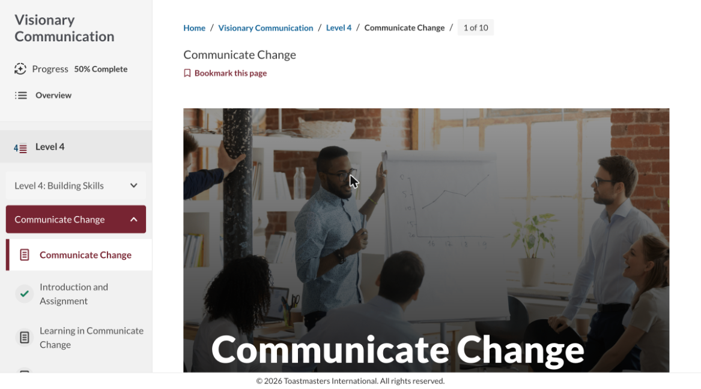
1234
The path Overview: every level and its items
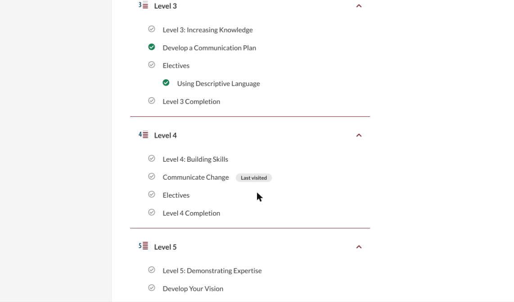
567
1Path
Your whole program, for example Presentation Mastery or Visionary Communication. Its name is at the top of the sidebar.
2Level
A stage of a path, Level 1 to Level 5. You do them in order.
3Project
A speech or assignment you give in your club, such as “Develop a Communication Plan”. It is a row on the Overview and a block in the sidebar.
4Step
One page inside a project: “Introduction and Assignment”, “Complete Your Project”, “Before You Move On” and so on. The breadcrumb shows where you are, for example 1 of 10.
5Level requirements
The “Level N: …” row at the top of each level. Its steps are Level N Requirements and Checklist and Completion. It sits next to the projects and is easy to miss.
6Electives
Projects you choose from a list. The row tells you how many you need (Level 3: two).
7Level Completion
The last row of a level, where you submit the level to your Base Camp manager. The last level is followed by Path Completion.
Evaluation Resource
A printable PDF in a project's Resources list, for your evaluator to use.
Overview
The page listing every level and project in your path, with a tick beside each.
Use this the first time you open a path, or any time you start a project.
Steps to follow
Log in to Base Camp and open your path from Paths & Learning.
Click Overview in the sidebar, then Resume or the first project in Level 1 (for example the Ice Breaker).
Read through the project's steps in order: click each one in the sidebar.
Open Introduction and Assignment and find the Purpose and the speech time.
Steps 1–2 · The path Overview
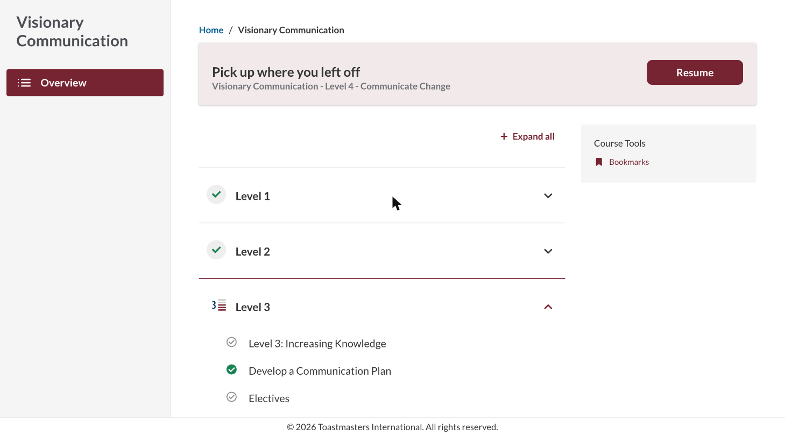
ABC
Resume takes you straight back to where you last were.
Expand all opens every level so you can see all of its items.
A green tick on a level means Base Camp counts it as complete. Check inside the level too.
Steps 3–4 · Inside a project: the steps in the sidebar
DEF
The project's steps are listed in the sidebar. Click the project to open or close the list.
Click Introduction and Assignment.
The number tells you which step you are on, for example 1 of 10.
1I'm new (continued)
Step 4 · Introduction and Assignment: Purpose and speech time
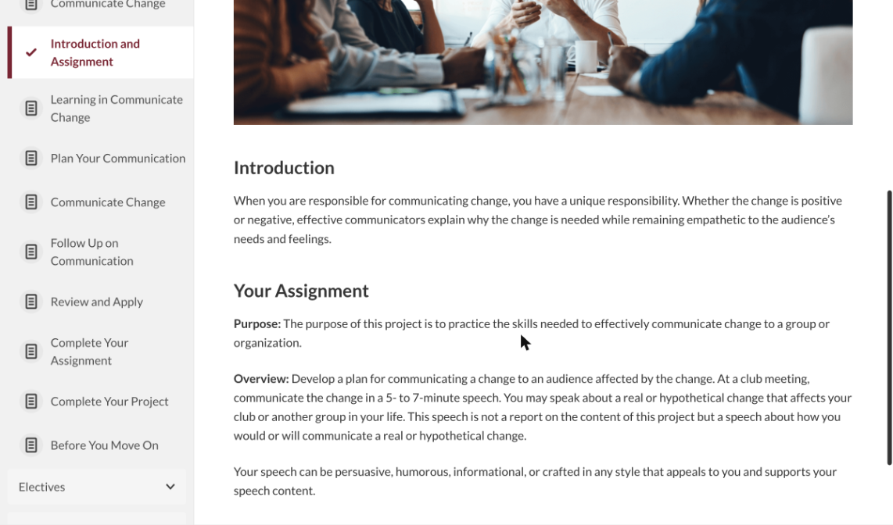
GH
Purpose: copy this line onto your paper form.
Speech time: in the Overview paragraph, here “a 5- to 7-minute speech”.
Write the Purpose on your paper form, and practise to the speech time. Each project words these a little differently, so read the Overview paragraph.
2Before my speech: print the Evaluation Resource
Use this when you have a speech booked at your next meeting.
Steps to follow
Go to the project's first page and scroll to the bottom to the Resources list.
Click Evaluation Resource and print it.
Give the printed copy to your evaluator before you speak so they can use it when they evaluate you.
Steps 1–2 · The Resources list on the project’s first page
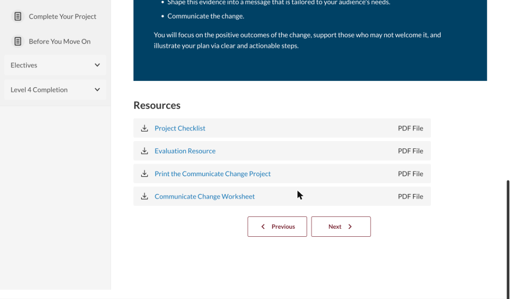
AB
The Resources list holds the project's PDFs.
Click Evaluation Resource, then print it. Give it to your evaluator before you speak.
Take to the meeting: your paper form with the Purpose, the printed Evaluation Resource for your evaluator, and your speech practised to the speech time.
3After my speech: log it and mark the project complete
Use this once you have spoken and been evaluated.
Steps to follow
Open Complete Your Project in the sidebar, scroll down to the speech log, fill it in and press Save Log.
Open Before You Move On, the last step, and press Complete My Project.
Step 1 · Complete Your Project: the speech log
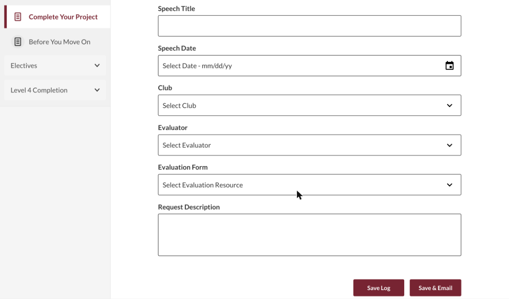
ABC
Log your speech: Speech Title, Speech Date, Club and Evaluator.
Pick the Evaluation Form from the list. It asks you to select an Evaluation Resource.
Save Log saves the entry. Save & Email also sends an email, so press it only when you are ready.
Step 2 · Before You Move On: Complete My Project
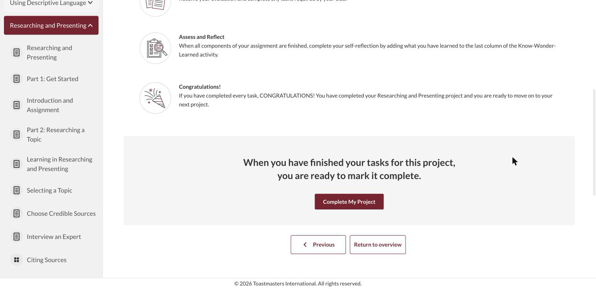
DE
The last step of every project, Before You Move On, lists the five stages: review, deliver, receive your evaluation, assess and reflect, congratulations.
When every task is done, press Complete My Project.
After step 2 · What you see once the project is complete
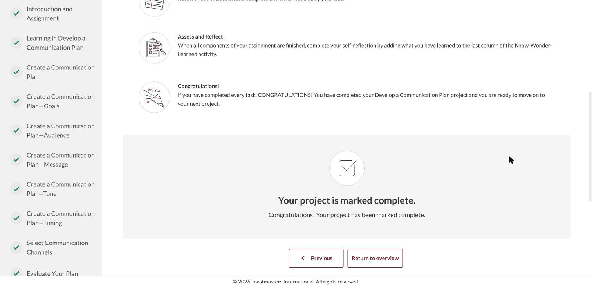
F
Once a project is complete the button is replaced by Your project is marked complete. Its tick on the Overview turns green.
4I've finished a level's projects: complete the level
A level is done when its projects, its requirements and its completion request are all finished.
Steps to follow
Finish every project in the level. Each one ends with Complete My Project.
If the level has Electives, pick and finish as many as it asks for.
If your level lists a Successful Club Series presentation, choose one and give it.
Open Level N: … then Checklist and Completion. Tick everything, answer the reflection questions, press Complete My Requirements.
Open Level N Completion, choose your club and press Submit.
Step 2 · Electives: choosing your projects
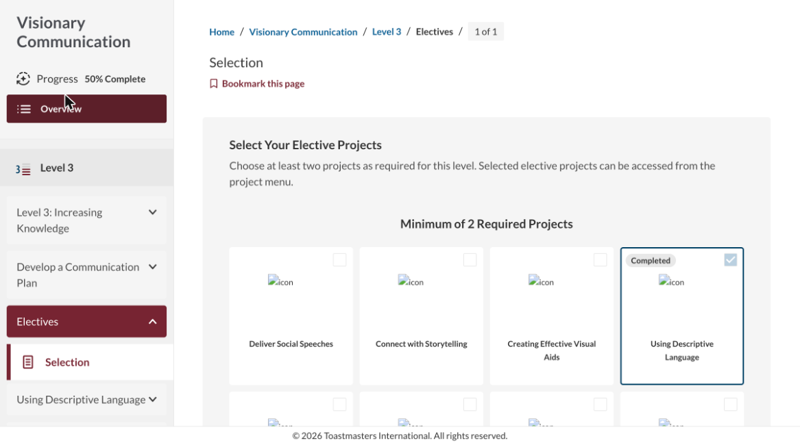
AB
Each level with electives shows how many you need, for example Minimum of 2 Required Projects.
Projects you have picked and finished show Completed. Any picked project you have not finished can be your next project.
Step 3 · Successful Club Series
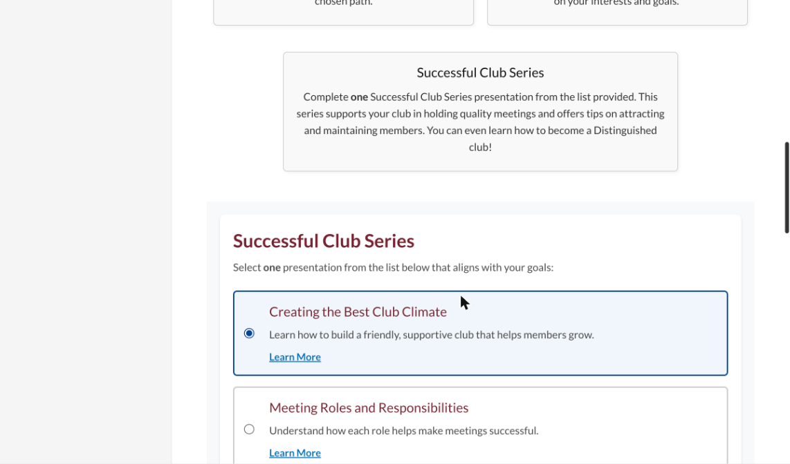
CD
If your level lists a Successful Club Series presentation, you must complete one.
Select the presentation you will give. You can give it at any time.
4Complete the level (continued)
Step 4 · Checklist and Completion: the tick list
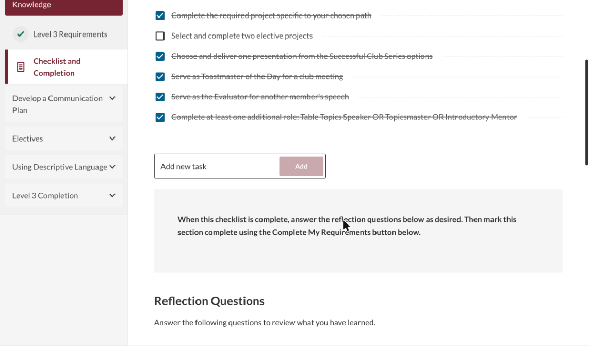
EFG
Tick the item for your elective projects once you have finished the number the level asks for.
Tick the item for your Successful Club Series presentation once you have given it.
When the checklist is complete, answer the reflection questions. The button is at the bottom (next picture).
Step 4 · Checklist and Completion: the bottom of the page
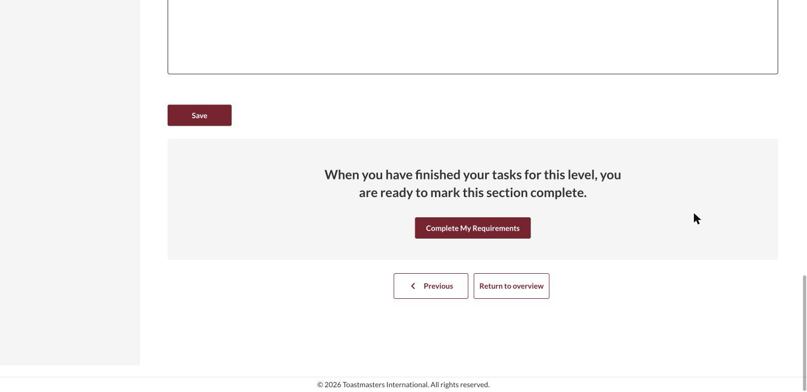
HI
At the bottom of Checklist and Completion, Base Camp asks whether you have finished the tasks for this level.
Press Complete My Requirements once the checklist is done and you have answered the reflection questions.
4Complete the level (continued)
Step 5 · Level N Completion: not ready yet
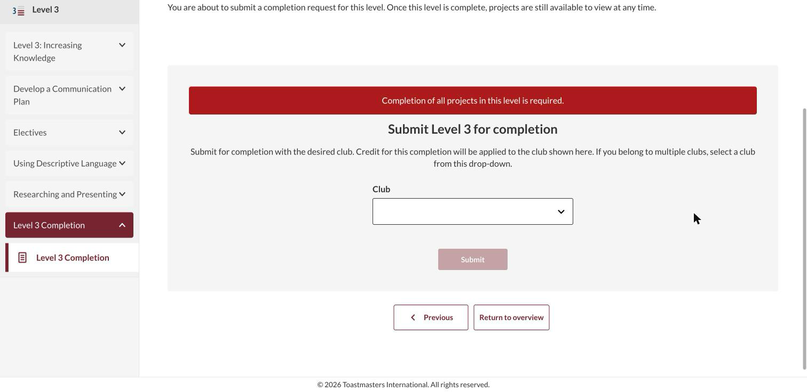
JKL
A red banner, “Completion of all projects in this level is required.”, means something is still unfinished.
Choose your Club. Credit for the level goes to the club shown.
Submit is greyed out until every project in the level is complete. When it is ready, press it to send a level completion request to your Base Camp manager.
Step 5 · Level N Completion: finished
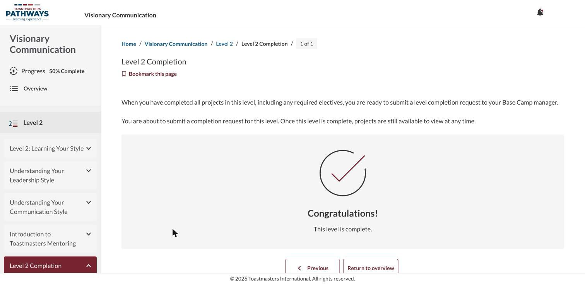
MN
The Level N Completion row is the last item in each level.
A finished level shows Congratulations! This level is complete.
Heads-up: Base Camp ticks “Level N Requirements” just for opening it, so a level can show green ticks while its checklist is still unfinished. Always open the level and look.
5I've finished every level: complete my path
Use this after Level 5 (or the last level of your path).
Steps to follow
Check that every level shows Level N Completion as complete.
Finish the Reflect on Your Path project like any other: its steps, then Complete My Project.
Open Path Completion, choose your club and press Submit. The request goes to your Base Camp manager.
Steps 2–3 · Reflect on Your Path and Path Completion
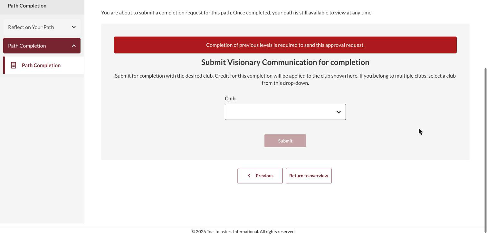
ABC
Reflect on Your Path is the last project. Finish it like any other project.
The red banner, “Completion of previous levels is required to send this approval request.”, means a level is still open.
Choose your Club and press Submit once the banner has gone.
6I'm lost: where am I and what is next?
Use this any time. The Overview always shows what is done and what is not.
Steps to follow
Open your path and click Overview, then Expand all.
Find the first grey outlined tick. That is your next item. (Resume also jumps to where you last were.)
Before moving to the next level, check its Level requirements and Level Completion rows.
Steps 1–2 · The Overview with levels expanded
ABCD
A filled green tick means the item is done.
A grey outlined tick means it is not done yet. The first item in a level (here “Level 3: Increasing Knowledge”) holds the level requirements and checklist.
Every level also ends with a completion item (here “Level 3 Completion”). These are easy to miss.
Last visited marks the project you opened most recently.